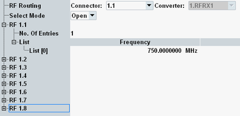

To configure measurement settings, press the hotkey "Config". It opens a dialog box with settings. The settings are described in this section.

Selects the RF connector at which the pathloss is measured.
Remote command:Selecting the connector is included in the INITiate commands, see "Measurement control hotkeys".
Selects the measurement mode.
"Open" | This mode expects that the end of the signal path is an "open". The reflected signal is measured. |
"Short" | This mode expects that the end of the signal path is a "short". The reflected signal is measured. |
"Eval" | Evaluates the results of the last "Open" measurement and the last "Short" measurement to calculate the gain versus the frequency. |
Setting the mode is included in the INITiate commands, see "Measurement control hotkeys".
There is one node per RF connector, specifying the relevant frequencies for pathloss measurements with this connector.
Specify the number of frequencies that you want to enter ("No. of Entries") and configure the list entries.
The gain vs. frequency result diagram covers the frequency range from the smallest frequency entry minus 200 MHz to the largest frequency entry plus 200 MHz. The measurement performs a frequency sweep for this range. A larger range requires a longer measurement duration.
The result table lists the measured gain per frequency entry.
Remote command:Press the "Display" softkey to display this hotkey.
The hotkey configures the number of frequencies over which the gain results are averaged. Increasing this setting smoothes the result traces.
The gain values in the result table are derived from the averaged results, so the setting applies to all gain results, in diagram view and table view.
"Average Filter Taps" = 1 disables averaging.
Remote command: